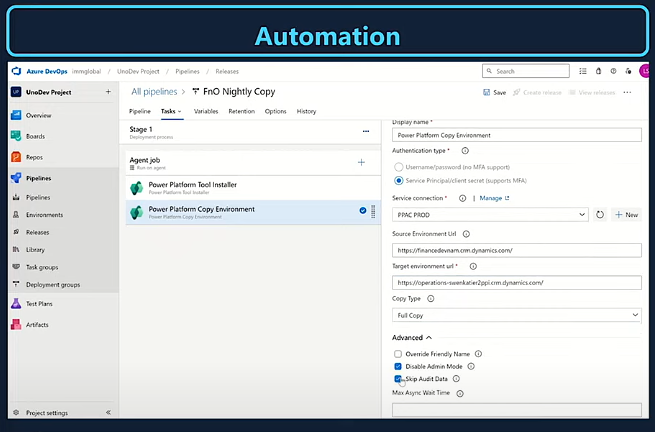

DevOps allows you to automate the copy process. For example, consider a scenario where you have a production environment and need to
copy your data (FNO data) nightly, weekly, or monthly. With DevOps, you can easily automate this entire process end-to-end, enabling you
to copy your production environment to your developer or sandbox environment. Additionally, there's no need to use your personal account
for this; instead, you can use a service principal with minimal setup

Copy Environment - Comparison between LCS and PPAC


It will still consider the truncation that was part of the LCS Copy process. e.g. Email parameters